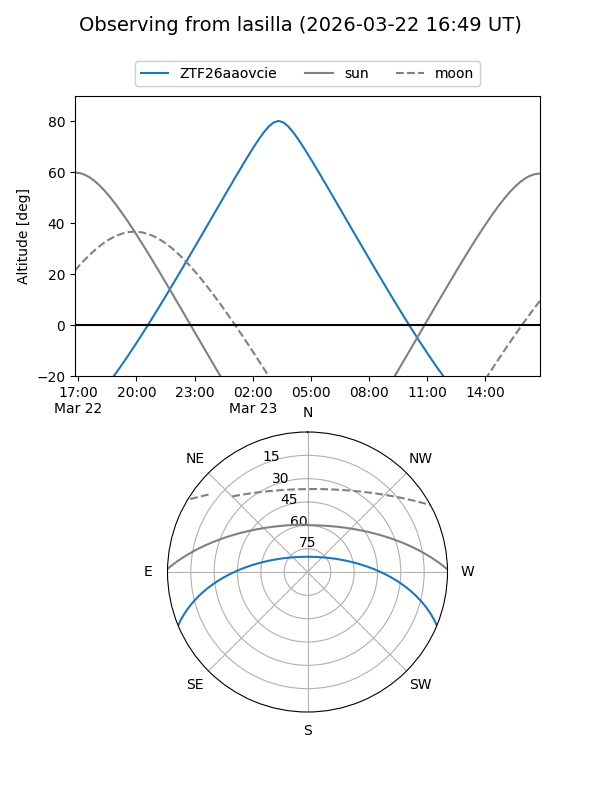
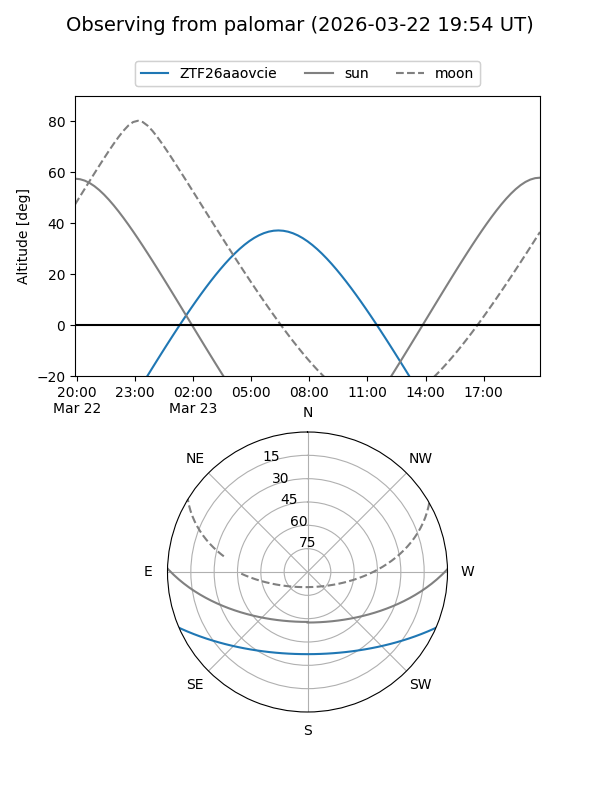

ZTF26aaovcie
Target ZTF26aaovcie at 2026-03-23 08:18
Aliases and brokers:
FINK: link
Lasair: link
ALeRCE: link
alt names
ZTF26aaovcie (ztf,fink_ztf)
Coordinates:
equatorial (ra, dec) = 159.5454,-19.31927
equatorial (HMS+DMS) = 10:38:10.89,-19:19:09.36
galactic (l, b) = (264.5361,+33.43594)
Flags:
Photometry:
last ztfg=17.41
1 ztfg detections
Lightcurve
Visibility


Additional plots